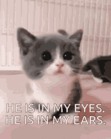
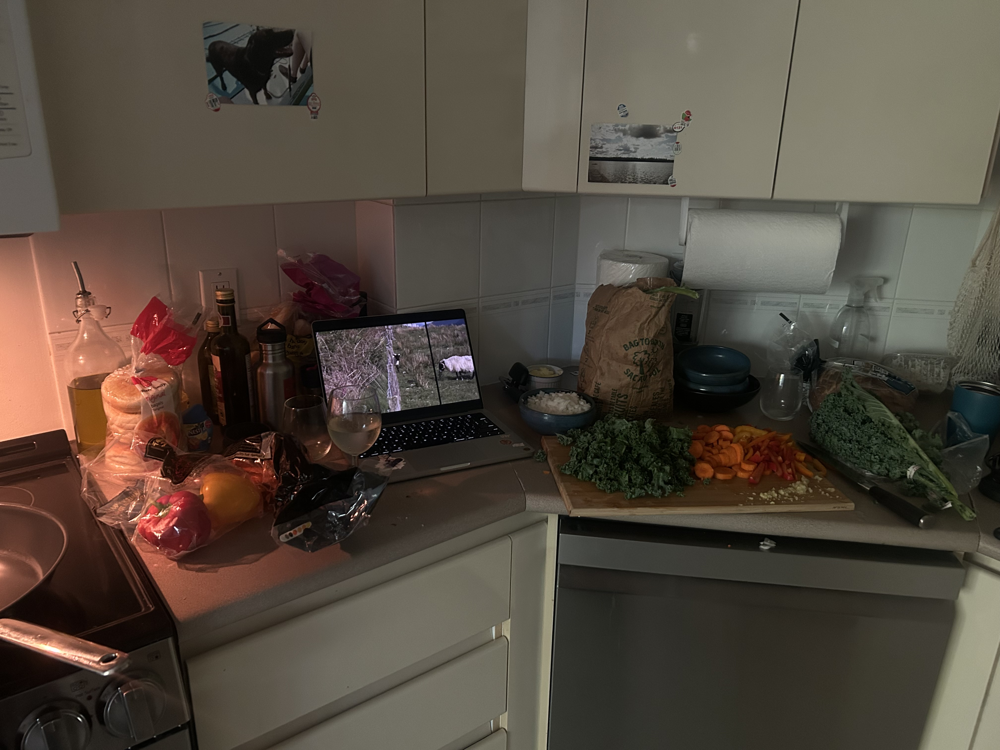

september 21, 2025
ok star ppl lemme put u onnnnnnnnnnnnnnn........ 'DIAMOND JUBILEE - CINDY LEE'. i know what u might be thinking: 'its not on spotify or any other music streaming service??? this is so annoying!!!'. but doesnt it make it more of an inticing listen? sooooo niche soooo indie soooo underground. ur freaking welcome.

i also have mostly exited the shadow realm so maybe i will be posting and updating this site a little more....
september 18, 2025
it is 11:35pm on a school night. just got back from the hive and am eating cucumbers and carrots. i feel old. like the summer has aged me 20 years. i eat kale now. and am partially pescatarian (unless rowan feeds me meat). it is nice being old. i am trying trying to change but it is like im pushing a very large boulder up a hill and everytime it gets close to the top it rolls back down..... and also i am shirtless and a man and greek (do u get it???). ok but actually i am trying to change but what else is new!?? i be trying to do this shitttt all da time and this time is no different. maybe i am not trying to change but trying to choose happiness. so i have been climbing and spending racks in the produce section of nofrills and its honestly been doing me a solid. i also have been listening to new music (!). upon my request eli sent me like 5 albums to listen to and so i have been working my way through those. i like goodbyehouse - snuggle. i listened to the whole thing on the bus to school and it was pretty fiiire. some more content i have been consuming is 'nor gather into barns'. if ur into youtube u gotta check this guy out. he makes pretty but sad videos. idk. i have become very attached to him. i have been thinking of if i was a boy i would be just like him. but then i realize i can do that as a girl for the most part. it just frusterates me that being a woman is so vunerable and scary. i know being a man has its cons but i would rlly like to do that cool travel stuff without being so scared. i have been getting stronger from climbing. its weird. i have never ever been this strong. and im not even that strong! i used to think that being strong was not for me. like it was unattractive. but now i dont rlly care. but sometimes i do. i care a lot what people think of me actually. i wish i could just let it all go. oki gn star ppl ! p.s. im goin to mj lenderman tmo :0

august 5, 2025
hello i am back what da heck.... so strange of me to be so present in this stratisphere (?? idk how to spell). but yes i am back and perhaps its just cause i have been using my compooper more recently. ok so hi! i wonder who is out there... helloooooooo.... give me a text! or freaking email me. that would be dope. ok but seriously let me talk to u.... everyone around me has a freaking bf now and its pissing me off. like just dont do it. boys are so lame and they are all like 'lets train' and 'lets go climbing'. ok wait brb gotta take a dump. okok im back. wait what was i saying. oh yea boyfriends. ok fine i actually dont care that much about it boys are fine i guess. i find the need to not say anything seriously about myself on this blog which is entirely missing the point of a fricking blog. but im scared someone evil is going to read this and be like mwahahah now i know all her secrets. but also i am scared that im oversharing u know. like when u get a littttle too personal with someone u just met and they are like nodding along but then after u realize that they thought u were crazy the whole time. but i think this blog is nice cause star people are only star people if they come here and its not like freaking instagram where it shows it to every single person i have ever met in my life all at once. u know? ok so maybe i should share something about myself now. ummmmmm. ok well why i am thinking about being too scared to be open about my opinions and thoughts is cause i just had a convo with my bestie rowan about how i am so scared of being wrong. not only that though im so scared of judgement and i keep a little part of me sacred and only for me and sometimes that makes me feel really isolated. and when i feel isolated and misunderstood i like to just further dig myself into a hole. its not a good cycle. so now i am sharing that. i am telling that to the world. and that thing about me is from that sacred untouched part of me. there u go. eat it now. yes eat the whole thought please. all in one bite......... ok also we were talking about how confidence is key which always freaking comes up in every aspect of my life. how things can be rlly cringe if u let them be or they can be rlly cool if u put some confidence behind them. like this blog could be super cringe if i let it be in my mind, which sometimes i do. but right now no! im so awesome and this blog reflects that to the moon. ok another thing i can share is that i feel spiritually connected with crows and harbour seals. sue me! i watched frances ha the other day and it made me so happy. i love lvoe vleo lveo love that movie so much. i also think that fall and winter in vancouver feels like that movie. cause sometimes the rain and clouds can wash everything into black and white, if u dont know frances ha is in black and white. ok segway into the fact that fall is coming. thats crazy! im excited personally. lemme know ur opinion in the comments. i wore a coat today and it was awesome. im excited to wear my scarves and long skirts. ok im hungry gotta eat and then get my beauty rest. bye bye stars and people and star people.
august 1, 2025
a return to simplicity....
i am so overwhelmed by everything.. so much technology so much noise between the this and the that, between me and you. the flower i bought for myself has dried and wilted, leaving a puddle of pollen where it lay. i have been leaving the house with no phone because i cant tell if it is the phone but i carry a whole world around with me. i feel so connected and tied to the worries and problems i have with people who are far far away. last night i couldnt sleep and i turned and turned and went over every tear in the fabric and promised come morning i would mend and mend. but now it is morning and i do not think i need to mend, what is broken is gone and there comes a peace with that. the problem with leaving my phone is three fold: music, where abouts and time. the first, music, is not a huuuge problem because i have found that i have been listening to too much music and being so cut off from the present moment/environment. taking the bus and walking is way more enjoyable without music, try it sometime! music should be a privilege not a necessity. ok but i do enjoy a good song from now and then so i got an ipod shuffle!! 20 buckeroonies from my trusty pal facebook marketplace. it is purple and i ripped all my fav songs and albums from spotify onto it using one of those sketchy websites. now i can dance around like in those old apple commercials(like this one!). anyways... the next problem i have noticed is im a big time google maps girl, i loooove knowing where i am or exactly when the next bus will be. for this one there is no solution.. it can be a blessing tho, i will just have to figure it out and i will get to know my city a lil better. ok and the last problem is not one i would have expected but i do not have a watch and so when i have work the same day and am out and about i get pretty stressed about being late. i have like asked people for the time but thats always a little awkward so i think i will need a watch in the near future. ok so that is all. i am trying the phoneless lifestyle to see if it helps with being more present. i may report back on my progres if i feel the urge to but dont count on it. bye bye bye my star people if u are even out there!!!!!!!!!!!!!!!!! xxxxxx kisses to the moon
july 2, 2025
hellllloooooooooooooooooo world! there is something about the way the wind blows and i looked on the ground yesterday for a leaf and there were none. cause change comes in the growing and the dying and even the growing feels like dying sometimes. i rlly thought i was dying but mayhaps this is the shedding of the chyrsalid that must happen every so often.